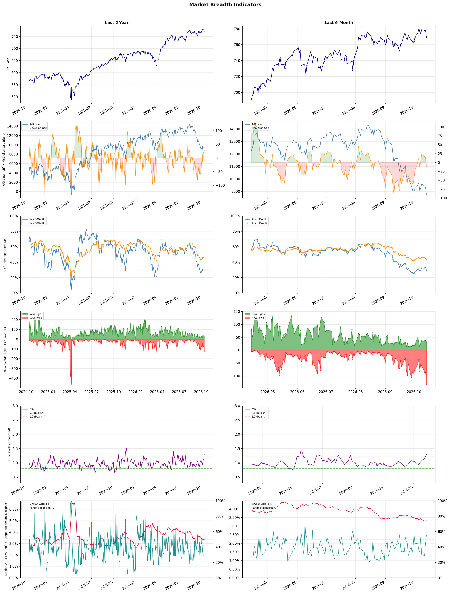

A daily market breadth and sector rotation report for active investors
| Item | Read |
|---|---|
| Regime | Defensive |
| Risk posture | Defensive |
| Universe | 1,316 stocks tracked · 32 new 52-week highs · 30 active swing setups |
| Breadth | only 29.7% of tracked stocks are above SMA50, new lows exceed new highs (133 vs 32), McClellan oscillator (breadth momentum) is negative at -12.4 |
| Leadership | Oil & Gas Refining & Marketing, Oil & Gas Integrated, and Discount Stores |
| Weakest groups | Uranium, Gambling, and REIT - Mortgage |
Use this report to prioritize research and chart review; validate entries, stops, liquidity, earnings, and risk before acting.
| Item | Read |
|---|---|
| Primary read | Defensive regime with Defensive risk posture. |
| Research queue | MPC, VLO, PSX, DINO, PBF |
| Leadership focus | Oil & Gas Refining & Marketing, Oil & Gas Integrated, and Discount Stores |
| Caution list | Uranium, Gambling, and REIT - Mortgage |
| Review prompt | Check extension risk, chart location, fundamentals, valuation, and earnings before using any research row. |
| Item | Read |
|---|---|
| Primary read | 4 active risk warnings; use screen output as watchlist input only. |
| Bullish screens | MPC, PSX, VLO, BP, CVX |
| Bearish screens | SOUN, WRD, XRAY, BRUN, LMND |
| Alerts / levels | Automated trigger, stop, ATR, liquidity, reward/risk, and event-risk levels are pending future enrichment. |
| Review prompt | Open the linked chart, define trigger and invalidation, then check liquidity and event risk independently. |
Risk Posture: Defensive — screen backdrop favors caution; require independent risk review before new exposure
Metric context: McClellan below -50 = elevated selling pressure; below -100 = washout territory. Range Expansion = share of stocks with daily range above their 20-day average. Signal Density = share of tracked names appearing in signal screens.
| Breadth Date | % > SMA50 | % > SMA200 | New Highs | New Lows | McClellan | Median Range | Avg Range | Median ATR14 | Range Expansion | Signal Density |
|---|---|---|---|---|---|---|---|---|---|---|
| 2026-10-14 | 29.7% | 42.9% | 32 | 133 | -12.4 | 3.3% | 4.1% | 3.3% | 55.1% | 18.0% |

Prior comparison date: October 13, 2026
| Metric | Prior | Current | Change |
|---|---|---|---|
| Regime | Defensive | Defensive | unchanged |
| Risk Posture | Defensive | Defensive | unchanged |
| % > SMA50 | 33.7% | 29.7% | -3.9 pts |
| % > SMA200 | 45.1% | 42.9% | -2.2 pts |
| New Highs | 38 | 32 | -6 |
| New Lows | 87 | 133 | -46 |
Top-10 industries entering: Medical Care Facilities, Oil & Gas E&P, and Software - Application. Top-10 industries leaving: Copper, Software - Infrastructure, and Steel. New multi-signal long setups: ACVA, CNC, CVX, DOCU, ECL, GGG. New multi-signal short setups: APLD, BLDR, BRUN, CIFR.
| Status | Tickers | Read |
|---|---|---|
| Added | ACVA, APLD, BLDR, BRUN, CIFR, CNC, CVX, DOCU | New technical screen matches vs prior report. |
| Removed | DHT, DINO, DV, FIGS, HAS, HNGE, LIN, MA | No longer present in today's technical screen matches. |
| Still Active | BOX, BP, CBRL, CHD, EVRG, IFF, INDI, LAES | Appeared in both current and prior reports. |
| Promoted | none | Model Screen Score improved by at least 15 points. |
| Downgraded | none | Model Screen Score declined by at least 15 points. |
| Direction | Industry | ETF | Prior Rank | Current Rank | Days | Rank Change |
|---|---|---|---|---|---|---|
| Rose | Apparel Manufacturing | N/A | 82 | 16 | 35 | +66 |
| Rose | Footwear & Accessories | N/A | 87 | 28 | 42 | +59 |
| Rose | Restaurants | N/A | 72 | 20 | 28 | +52 |
| Rose | Semiconductor Equipment & Materials | SOXX | 83 | 35 | 28 | +48 |
| Rose | Scientific & Technical Instruments | N/A | 70 | 24 | 42 | +46 |
Bull: The Apparel Manufacturing sector is experiencing rising relative strength primarily due to favorable macroeconomic conditions and strategic shifts in sourcing, as highlighted in recent headlines. The anticipated trade deals and a shift in sourcing away from China are revitalizing the sector, creating a more competitive landscape that benefits domestic manufacturers. Additionally, the identification of top-performing apparel stocks for 2026 suggests investor confidence in the sector's growth potential, further driving interest and investment in apparel manufacturing.
Bear: While the apparel manufacturing sector may currently exhibit rising relative strength, this could be misleading as it often reflects short-term market sentiment rather than sustainable growth. The anticipated trade deals and sourcing shifts away from China may not fully materialize or could lead to increased costs and supply chain disruptions, undermining profitability. Moreover, the ongoing challenges of inflation, changing consumer preferences towards sustainable and ethical fashion, and potential economic downturns could significantly dampen the sector's long-term prospects, making it a risky investment at this juncture.
Verdict: The apparel manufacturing sector's rising relative strength is primarily driven by favorable macroeconomic conditions, strategic shifts in sourcing away from China, and positive investor sentiment bolstered by anticipated trade deals. However, key risks include the potential for these sourcing changes to lead to increased costs and supply chain disruptions, alongside ongoing inflation and shifting consumer preferences towards sustainable fashion, which could undermine long-term profitability. Investors should closely monitor these factors to assess the sustainability of growth in this sector.
Sources: Google News
Bull: The Footwear & Accessories sector is experiencing a rise in relative strength primarily due to a resurgence in consumer discretionary spending, as highlighted by positive insights from the Q2 recaps of major players like Movado and VF Corp. Additionally, the mention of "5 Best Shoe Stocks for 2026" suggests growing investor confidence in the long-term potential of footwear companies, while the focus on brands like Deckers and Crocs indicates a strong demand for innovative and premium products in the market. This combination of consumer enthusiasm and positive market sentiment is driving the sector's upward momentum.
Bear: While the footwear and accessories sector may currently show rising relative strength, this could be misleading given the broader economic uncertainties and potential headwinds. Increased consumer discretionary spending may not be sustainable, especially with inflationary pressures and rising interest rates that could dampen consumer confidence. Furthermore, the recent downturn in stocks like VF Corp and Deckers indicates that even established brands are struggling to maintain momentum, suggesting that the sector's upward trend may be more fragile than it appears.
Verdict: The Footwear & Accessories sector is likely experiencing a rise due to a rebound in consumer discretionary spending and growing investor confidence in top brands, as evidenced by positive Q2 performances from companies like Movado and VF Corp. However, the key risk lies in the potential sustainability of this spending amid economic uncertainties, inflationary pressures, and rising interest rates, which could undermine consumer confidence and lead to a downturn in the sector. Investors should closely monitor economic indicators and brand performance to gauge the longevity of this upward trend.
Sources: Google News
Bull: The rising relative strength of the restaurant industry can be attributed to a combination of robust consumer demand and strategic positioning among key players. As highlighted by the positive outlook in the Motley Fool's article on the best restaurant ETFs for 2026, the sector is benefiting from a shift in consumer preferences towards dining out and convenience options, which is further supported by the resilience of major brands like Restaurant Brands International (QSR) and the favorable industry outlook from Zacks. Despite some volatility in individual stocks like Chipotle, the overall trend indicates that established restaurants are adapting well to market conditions, enhancing their competitive edge and driving investor interest.
Bear: While the rising relative strength of the restaurant industry may seem promising, it is crucial to consider the underlying economic pressures that could undermine this growth, such as inflationary costs and tightening consumer budgets. The dip in stocks like Chipotle and the overall volatility in the sector suggest that even major players are not immune to shifts in consumer behavior, particularly as discretionary spending on dining out may decline in the face of economic uncertainty. Additionally, the reliance on convenience options could lead to increased competition and margin pressures, challenging the long-term sustainability of the current trend.
Verdict: The restaurant industry's rising strength is primarily driven by robust consumer demand for dining out and convenience options, supported by major brands effectively adapting to market conditions. However, key risks remain, particularly from inflationary pressures and potential declines in discretionary spending, which could threaten the sustainability of this growth if economic uncertainty persists. Investors should monitor consumer spending trends closely to assess the long-term viability of restaurant stocks.
Sources: Google News
Bull: The Semiconductor Equipment & Materials sector is likely experiencing rising relative strength due to the ongoing demand for advanced semiconductor technologies, despite recent profit-taking and short-term sell-offs in individual stocks like Applied Materials and Veeco Instruments. The headlines indicate a broader market correction rather than a fundamental weakness in the industry, as evidenced by optimistic outlooks for semiconductor stocks highlighted in articles discussing the best semiconductor investments for 2026, suggesting that long-term growth drivers, such as the increasing need for chips in various applications, remain intact and robust.
Bear: While the bull analyst points to ongoing demand for advanced semiconductor technologies, the recent profit-taking and significant sell-offs in key players like Applied Materials and Veeco Instruments suggest that investor sentiment may be shifting due to concerns about overvaluation and potential supply chain disruptions. Furthermore, the optimistic outlook for 2026 may not adequately account for the cyclical nature of the semiconductor industry, where periods of rapid growth can be followed by sharp declines, indicating that current valuations may not be sustainable in the face of potential economic headwinds and reduced consumer spending.
Verdict: The semiconductor equipment and materials sector is experiencing rising relative strength driven by sustained demand for advanced semiconductor technologies across various applications, despite recent profit-taking in major stocks. However, investors should remain cautious of the cyclical nature of the industry and the risk of overvaluation, as potential economic headwinds and reduced consumer spending could lead to a significant downturn in demand. It is advisable to monitor market conditions closely and consider diversifying investments to mitigate exposure to these risks.
Sources: Google News
Bull: The Scientific & Technical Instruments sector is experiencing rising relative strength primarily due to increased demand for precision instruments driven by advancements in technology and the ongoing AI boom, as highlighted in the Morningstar article. Companies like Novanta Inc. and MKS Inc. are well-positioned to benefit from this trend, as their innovations cater to the growing needs in automation and data analytics, further solidifying the industry's upward trajectory. Additionally, the strong performance of key players such as Badger Meter and Hexagon AB indicates robust market confidence and investment in this sector, enhancing its appeal relative to other industries.
Bear: While the bull thesis highlights rising demand driven by technological advancements, it overlooks potential headwinds such as supply chain disruptions, rising input costs, and inflationary pressures that could dampen profit margins for companies in the Scientific & Technical Instruments sector. Additionally, the reliance on a booming AI market poses risks; if the anticipated growth fails to materialize or if AI investments shift focus, companies like Novanta and MKS could face significant revenue shortfalls, undermining their current valuations and market confidence.
Verdict: The Scientific & Technical Instruments sector is likely experiencing rising relative strength due to heightened demand for precision instruments fueled by technological advancements and the AI boom, positioning companies like Novanta Inc. and MKS Inc. to capitalize on these trends. However, key risks include potential supply chain disruptions, rising input costs, and inflationary pressures that could impact profit margins, along with the uncertainty surrounding sustained growth in the AI market, which could jeopardize revenue projections for these firms. Investors should closely monitor these risks while considering positions in this sector.
Sources: Google News
| Direction | Industry | ETF | Prior Rank | Current Rank | Days | Rank Change |
|---|---|---|---|---|---|---|
| Fell | Uranium | URA | 25 | 87 | 35 | -62 |
| Fell | Gambling | N/A | 33 | 86 | 28 | -53 |
| Fell | Capital Markets | KCE | 11 | 63 | 35 | -52 |
| Fell | Agricultural Inputs | N/A | 7 | 57 | 42 | -50 |
| Fell | Oil & Gas Equipment & Services | XES | 20 | 70 | 35 | -50 |
Bear: While the bull analyst attributes the recent decline in the uranium sector to a correction that highlights the disparity between profitable producers and loss-making developers, this perspective overlooks broader macroeconomic challenges and regulatory uncertainties that continue to plague the nuclear industry. The ongoing volatility in energy markets, coupled with rising interest rates and inflationary pressures, could dampen investment in uranium, as capital becomes scarcer and more expensive. Furthermore, the potential for increased scrutiny and regulatory hurdles surrounding nuclear energy, particularly in light of environmental concerns, may further hinder the sector's growth prospects, making it a less attractive investment in the near term.
Bull: The recent decline in the relative strength of the uranium sector can be attributed to a sector correction that has highlighted the disparity between profitable uranium producers and loss-making developers, as noted in the ChartMill headline. This differentiation may have led to investor caution, particularly as the market reassesses the viability and financial health of various companies within the industry. Additionally, the focus on evaluating key metrics for investing in nuclear energy, as mentioned by Investing.com, suggests that investors are increasingly selective, which could be contributing to the overall downward pressure on the sector's performance relative to other industries.
Verdict: The recent decline in the uranium sector is primarily driven by a sector correction that differentiates between financially sound producers and struggling developers, leading to increased investor caution. However, the key risk lies in broader macroeconomic factors such as rising interest rates and regulatory uncertainties, which could further suppress investment in uranium and hinder the industry's growth prospects. Investors should remain vigilant and consider these external pressures when evaluating opportunities within the sector.
Sources: Google News
Bear: While the bull analyst highlights macroeconomic concerns and mixed outlooks, the fundamental issues plaguing the gambling industry extend beyond geopolitical tensions and short-term volatility. The saturation of the sports betting market, coupled with increasing regulatory scrutiny and potential taxation changes, could significantly hinder growth prospects. Additionally, consumer spending may not rebound as expected if economic conditions worsen, leading to a more sustained decline in gambling revenues rather than a temporary dip.
Bull: The Gambling industry is experiencing a decline in relative strength primarily due to macroeconomic concerns, such as geopolitical tensions highlighted by the Iran war, which can dampen consumer spending and investor sentiment. Additionally, the recent headlines indicate a mixed outlook, with some analysts noting a resurgence in regional gaming, while others point to the negative impact of NFL prediction bets on gambling apps, suggesting volatility and uncertainty in the sports betting sector. This combination of external pressures and fluctuating performance expectations is likely contributing to the industry's relative weakness compared to others.
Verdict: The gambling industry's decline is primarily driven by a saturated sports betting market and increasing regulatory scrutiny, which threaten long-term growth prospects. While macroeconomic concerns like geopolitical tensions and consumer spending fluctuations contribute to short-term volatility, the key risk lies in the potential for sustained revenue declines if economic conditions worsen and regulatory challenges intensify. Investors should closely monitor regulatory developments and consumer spending trends to gauge the industry's recovery potential.
Sources: Google News
Bear: While the bull analyst highlights a shift in investor preference towards more resilient sectors, the underlying issues in the Capital Markets sector are more concerning. The tightening of global markets, coupled with rising interest rates and inflationary pressures, could lead to decreased liquidity and trading volumes, which are critical for capital market firms. Additionally, the excitement around tokenized assets may not translate into immediate capital inflows for traditional capital markets, as regulatory uncertainties and technological integration challenges could hinder their adoption, further straining the sector's performance.
Bull: The Capital Markets sector is likely experiencing a decline in relative strength due to tightening global markets and broader economic uncertainties, as indicated by headlines discussing the impact of midterm political dynamics and a cautious outlook from firms like RBC Wealth Management. Additionally, the focus on sectors primed for growth, such as those highlighted by J.P. Morgan and Morningstar, suggests investor preference is shifting towards more resilient or emerging sectors, leaving Capital Markets under pressure. This shift may be exacerbated by the rising interest in tokenized assets, as noted by CoinGecko, which could be diverting attention and capital away from traditional capital market stocks.
Verdict: The Capital Markets sector is likely declining due to tightening global conditions, rising interest rates, and inflationary pressures, which are reducing liquidity and trading volumes critical for firms in this space. The key risk from the bear case is that the anticipated shift towards tokenized assets may not provide immediate relief or capital inflows, as regulatory hurdles and technological challenges could impede their adoption, further exacerbating the sector's struggles. Investors should consider reallocating capital towards more resilient sectors while closely monitoring developments in regulatory frameworks for tokenized assets.
Sources: Google News
Bear: While the bull analyst highlights potential recovery opportunities, the persistent supply shocks in fertilizers and energy are likely to result in sustained cost pressures that could severely impact profit margins for agricultural input companies. Additionally, the agricultural sector faces long-term headwinds from increasing regulatory scrutiny, climate change impacts on crop yields, and shifting consumer preferences towards sustainable practices, which may hinder the sector's ability to capitalize on broader economic trends. As such, the relative strength trend may continue to decline, reflecting deeper systemic issues rather than just temporary market fluctuations.
Bull: The Agricultural Inputs sector is likely experiencing a decline in relative strength due to ongoing supply shocks in fertilizers and energy, as highlighted by the Webull article, which may be causing investor concerns about production costs and margins. Additionally, the broader economic context, as mentioned in the Seeking Alpha and Morningstar articles, suggests that while the materials sector is breaking out, the Agricultural Inputs segment has not yet capitalized on this trend, leading to undervaluation and potential opportunities for recovery in the coming years.
Verdict: The Agricultural Inputs sector's decline is fundamentally driven by ongoing supply shocks in fertilizers and energy, which are increasing production costs and squeezing profit margins for companies in the industry. Key risks include persistent cost pressures and long-term challenges such as regulatory scrutiny and climate change impacts, which could hinder recovery and lead to further declines in relative strength. Investors should closely monitor these factors while considering potential undervaluation opportunities in the sector.
Sources: Google News
Bear: While the bull analyst highlights a sector-wide rally and emerging technologies, the fundamental challenges facing the Oil & Gas Equipment & Services sector remain significant. The ongoing volatility in oil prices, driven by geopolitical tensions and shifting demand dynamics, poses a persistent risk to revenue stability for companies in this space. Furthermore, the increasing regulatory pressures and societal push towards decarbonization may further limit the growth potential of traditional oil and gas services, making it difficult for the sector to regain its relative strength amidst a broader market shift towards sustainable energy solutions.
Bull: The Oil & Gas Equipment & Services sector is experiencing a decline in relative strength primarily due to a broader market perception that prioritizes more innovative energy solutions, as indicated by the focus on tokenized stocks and alternative investments in the recent headlines. Additionally, the rally in stocks like Innovex International suggests that while there is sector-wide momentum, it may be concentrated in specific companies rather than a broad-based recovery for the entire industry, leading to a relative underperformance of the sector as a whole. This dynamic reflects a transitional phase in energy investments, where traditional oil and gas services are being overshadowed by emerging technologies and alternative energy solutions.
Verdict: The Oil & Gas Equipment & Services sector is likely experiencing a decline due to a market shift towards innovative and sustainable energy solutions, which is overshadowing traditional oil and gas investments. Key risks include ongoing volatility in oil prices and increasing regulatory pressures aimed at decarbonization, which could further hinder the sector's recovery and growth potential. Investors should consider reallocating their portfolios towards companies that are adapting to these emerging trends while remaining cautious of traditional players facing significant headwinds.
Sources: Google News
| Industry | Rank | ETF | 7d | 14d | 28d | 42d | Chg 42d | Size | 20D | 60D | Composite | Active Setups |
|---|---|---|---|---|---|---|---|---|---|---|---|---|
| Oil & Gas Refining & Marketing | 1 | CRAK | 1 | 1 | 2 | 2 | +1 | 7 | 12.4% | 36.2% | 0.997 | 0 |
| Oil & Gas Integrated | 2 | XLE | 15 | 10 | 5 | 4 | +2 | 10 | 6.4% | 18.0% | 0.941 | 0 |
| Discount Stores | 3 | XRT | 12 | 16 | 35 | 38 | +35 | 7 | 10.2% | 11.5% | 0.906 | 1 |
| Health Information Services | 4 | N/A | 2 | 4 | 3 | 3 | -1 | 12 | 4.9% | 33.2% | 0.902 | 1 |
| Household & Personal Products | 5 | XLP | 17 | 28 | 13 | 22 | +17 | 12 | 6.3% | 9.0% | 0.879 | 1 |
| Apparel Retail | 6 | XRT | 8 | 12 | 37 | 26 | +20 | 8 | 10.8% | 8.6% | 0.871 | 0 |
| Oil & Gas E&P | 7 | XOP | 31 | 40 | 10 | 5 | -2 | 26 | 1.7% | 11.8% | 0.833 | 1 |
| Diagnostics & Research | 8 | N/A | 3 | 2 | 1 | 1 | -7 | 16 | -0.6% | 24.4% | 0.817 | 1 |
| Software - Application | 9 | IGV | 13 | 24 | 11 | 12 | +3 | 74 | 1.3% | 14.0% | 0.770 | 1 |
| Medical Care Facilities | 10 | IHF | 18 | 20 | 7 | 15 | +5 | 9 | 1.2% | 9.3% | 0.768 | 0 |
Rank columns (7d–42d) show the industry's rank that many trading days ago — lower is stronger. Chg 42d = rank change vs 42 trading days ago — positive means the industry moved up. 20D and 60D are the mean stock return within the industry over that period. Active Setups: count of today's swing-trade candidates from this industry appearing across all signal screens.
| Industry | Rank | ETF | 7d | 14d | 28d | 42d | Chg 42d | Size | 20D | 60D | Composite | Active Setups |
|---|---|---|---|---|---|---|---|---|---|---|---|---|
| Uranium | 87 | URA | 83 | 78 | 76 | 31 | -56 | 6 | -21.8% | -22.8% | 0.019 | 0 |
| Gambling | 86 | N/A | 84 | 87 | 33 | 48 | -38 | 5 | -20.0% | -25.8% | 0.047 | 0 |
| REIT - Mortgage | 85 | N/A | 87 | 85 | 63 | 45 | -40 | 11 | -15.4% | -22.4% | 0.058 | 0 |
| Electrical Equipment & Parts | 84 | XLI | 63 | 46 | 73 | 86 | +2 | 12 | -16.3% | -29.9% | 0.061 | 0 |
| Aerospace & Defense | 83 | ITA | 79 | 64 | 81 | 85 | +2 | 26 | -15.4% | -19.5% | 0.067 | 0 |
| Resorts & Casinos | 82 | N/A | 85 | 86 | 78 | 80 | -2 | 6 | -12.3% | -22.2% | 0.070 | 0 |
| Other Industrial Metals & Mining | 81 | N/A | 81 | 70 | 68 | 36 | -45 | 21 | -17.0% | -19.0% | 0.070 | 0 |
| Utilities - Renewable | 80 | N/A | 77 | 72 | 75 | 79 | -1 | 6 | -16.2% | -26.1% | 0.085 | 0 |
| Chemicals | 79 | N/A | 82 | 84 | 85 | 81 | +2 | 8 | -9.8% | -25.8% | 0.097 | 0 |
| Solar | 78 | TAN | 78 | 74 | 86 | 88 | +10 | 8 | -6.9% | -29.8% | 0.162 | 0 |
Rank columns (7d–42d) show the industry's rank that many trading days ago — lower is stronger. Chg 42d = rank change vs 42 trading days ago — positive means the industry moved up. 20D and 60D are the mean stock return within the industry over that period. Active Setups: count of today's swing-trade candidates from this industry appearing across all signal screens.
These are research candidates from top-ranked stocks, capped at five names per industry to avoid over-concentration. Returns shown (60D, 120D, 250D) are historical — they reflect where prices have already moved, not forward expectations. Extension Risk flags names that may require extra patience or a better entry point. They are not buy signals.
Chart: TV = TradingView chart (opens in browser); PDF = local chart file (if downloaded).
| Ticker | Name | Industry | Industry Rank | Market Cap | 60D Hist | 120D Hist | 250D Hist | Extension Risk | Research Reason | Chart |
|---|---|---|---|---|---|---|---|---|---|---|
| MPC | Marathon Petroleum | Oil & Gas Refining & Marketing | 1 | N/A | 52.1% | 120.8% | 168.2% | Extended | Top-ranked in industry; extended | TV |
| VLO | Valero Energy | Oil & Gas Refining & Marketing | 1 | N/A | 46.6% | 98.3% | 191.7% | Constructive | Top-ranked in industry | TV |
| PSX | Phillips 66 | Oil & Gas Refining & Marketing | 1 | N/A | 40.8% | 88.7% | 136.2% | Constructive | Top-ranked in industry | TV |
| DINO | HF Sinclair | Oil & Gas Refining & Marketing | 1 | N/A | 40.1% | 117.3% | 153.5% | Extended | Top-ranked in industry; extended | TV |
| PBF | PBF Energy | Oil & Gas Refining & Marketing | 1 | N/A | 36.0% | 120.8% | 223.9% | Extended | Top-ranked in industry; extended | TV |
| PBR | Petroleo Brasileiro SA Petrobras | Oil & Gas Integrated | 2 | N/A | 44.0% | 27.2% | 132.5% | Constructive | Top-ranked in industry | TV |
| SU | Suncor Energy | Oil & Gas Integrated | 2 | N/A | 19.9% | 19.1% | 98.2% | Constructive | Top-ranked in industry | TV |
| SHEL | Shell | Oil & Gas Integrated | 2 | N/A | 19.8% | 18.1% | 49.5% | Constructive | Top-ranked in industry | TV |
| XOM | Exxon Mobil | Oil & Gas Integrated | 2 | N/A | 17.4% | 19.2% | 63.2% | Constructive | Top-ranked in industry | TV |
| BP | BP PLC | Oil & Gas Integrated | 2 | N/A | 15.6% | 7.8% | 53.9% | Constructive | Top-ranked in industry | TV |
| OLLI | Ollie's Bargain Outlet | Discount Stores | 3 | N/A | 41.1% | 5.5% | -26.1% | Constructive | Top-ranked in industry | TV |
| BJ | BJ's Wholesale Club Holdings | Discount Stores | 3 | N/A | 12.0% | 6.6% | 9.1% | Constructive | Top-ranked in industry | TV |
| COST | Costco | Discount Stores | 3 | N/A | 5.8% | -2.9% | 3.4% | Constructive | Top-ranked in industry | TV |
| WMT | Walmart | Discount Stores | 3 | N/A | 5.5% | -11.6% | 7.4% | Constructive | Top-ranked in industry | TV |
| DLTR | Dollar Tree | Discount Stores | 3 | N/A | -3.2% | 19.1% | 26.9% | Lagging | Top-ranked in industry; lagging | TV |
| VEEV | Veeva Systems | Health Information Services | 4 | N/A | 57.1% | 90.4% | 3.5% | Extended | Top-ranked in industry; extended | TV |
| DOCS | Doximity | Health Information Services | 4 | N/A | 41.7% | 29.1% | -56.0% | Constructive | Top-ranked in industry | TV |
| CERT | Certara | Health Information Services | 4 | N/A | 36.6% | 56.0% | -21.8% | Constructive | Top-ranked in industry | TV |
| HNGE | Hinge Health | Health Information Services | 4 | N/A | 24.5% | 142.8% | 108.3% | Extended | Top-ranked in industry; extended | TV |
| BTSG | BrightSpring Health Services | Health Information Services | 4 | N/A | -12.7% | 34.2% | 106.1% | Lagging | Top-ranked in industry; lagging | TV |
These are technical screen matches from existing signal files. They are not trade recommendations. Trigger, stop, ATR, liquidity, reward/risk, and event risk still require separate validation until those inputs are available.
Model Screen Score is weighted by signal count, industry rank, freshness, and setup type. It is not a probability of profit, expected return, or suitability rating. Industry cap: max 3 candidates per industry.
Signal glossary: Momentum Pullback = stock in an uptrend that has pulled back 10–30% and shows re-entry conditions. MA Compression = short- and long-term moving averages converging, often preceding a directional move. Three-Day Up/Down = three consecutive closes in the same direction. New 52Wk High/Low = price reached a new annual extreme.
Chart: TV = TradingView chart (opens in browser); PDF = local chart file (if downloaded).
| Ticker | Industry | Setups | Close | Industry Rank | Signal Count | Model Screen Score | Reason | Chart |
|---|---|---|---|---|---|---|---|---|
| MPC | Oil & Gas Refining & Marketing | New 52Wk High; Three-Day Up | 484.92 | 1 | 2 | 100 | Multi-signal; top industry breakout | TV |
| PSX | Oil & Gas Refining & Marketing | New 52Wk High; Three-Day Up | 297.29 | 1 | 2 | 100 | Multi-signal; top industry breakout | TV |
| VLO | Oil & Gas Refining & Marketing | New 52Wk High; Three-Day Up | 459.78 | 1 | 2 | 100 | Multi-signal; top industry breakout | TV |
| BP | Oil & Gas Integrated | New 52Wk High; Three-Day Up | 48.81 | 2 | 2 | 100 | Multi-signal; top industry breakout | TV |
| CVX | Oil & Gas Integrated | New 52Wk High; Three-Day Up | 222.04 | 2 | 2 | 100 | Multi-signal; top industry breakout | TV |
| CHD | Household & Personal Products | MA Compression; Three-Day Up | 102.63 | 5 | 2 | 88 | Multi-signal; top industry setup | TV |
| DOCU | Software - Application | New 52Wk High; Three-Day Up | 75.23 | 9 | 2 | 85 | Multi-signal; top industry breakout | TV |
| CNC | Healthcare Plans | New 52Wk High; Three-Day Up | 70.16 | 11 | 2 | 85 | Multi-signal; new-high strength | TV |
| CBRL | Restaurants | New 52Wk High; Three-Day Up | 62.72 | 20 | 2 | 77 | Multi-signal; new-high strength | TV |
| BOX | Software - Infrastructure | New 52Wk High; Three-Day Up | 38.07 | 22 | 2 | 77 | Multi-signal; new-high strength | TV |
| IFF | Specialty Chemicals | New 52Wk High; Three-Day Up | 89.60 | 36 | 2 | 70 | Multi-signal; new-high strength | TV |
| EVRG | Utilities - Regulated Electric | MA Compression; Three-Day Up | 82.67 | 31 | 2 | 65 | Multi-signal; compression setup | TV |
| OGE | Utilities - Regulated Electric | MA Compression; Three-Day Up | 47.51 | 31 | 2 | 65 | Multi-signal; compression setup | TV |
| MRSH | Insurance Brokers | MA Compression; Three-Day Up | 178.40 | 33 | 2 | 65 | Multi-signal; compression setup | TV |
| ECL | Specialty Chemicals | MA Compression; Three-Day Up | 287.71 | 36 | 2 | 65 | Multi-signal; compression setup | TV |
| ACVA | Auto & Truck Dealerships | New 52Wk High; Three-Day Up | 10.50 | 58 | 2 | 65 | Multi-signal; new-high strength | TV |
| GGG | Specialty Industrial Machinery | MA Compression; Three-Day Up | 80.48 | 66 | 2 | 50 | Multi-signal; compression setup | TV |
Bearish setups — stocks making new lows or showing persistent downside patterns. Validate carefully before acting.
| Ticker | Industry | Setups | Close | Industry Rank | Signal Count | Model Screen Score | Reason | Chart |
|---|---|---|---|---|---|---|---|---|
| SOUN | Software - Application | New 52Wk Low; Three-Day Down | 4.53 | 9 | 2 | 55 | Multi-signal; new-low weakness | TV |
| WRD | Software - Application | New 52Wk Low; Three-Day Down | 4.21 | 9 | 2 | 55 | Multi-signal; new-low weakness | TV |
| XRAY | Medical Instruments & Supplies | New 52Wk Low; Three-Day Down | 8.44 | 15 | 2 | 55 | Multi-signal; new-low weakness | TV |
| BRUN | Software - Infrastructure | New 52Wk Low; Three-Day Down | 9.65 | 22 | 2 | 47 | Multi-signal; new-low weakness | TV |
| LMND | Insurance - Property & Casualty | New 52Wk Low; Three-Day Down | 43.86 | 26 | 2 | 40 | Multi-signal; new-low weakness | TV |
| INDI | Semiconductors | New 52Wk Low; Three-Day Down | 2.01 | 29 | 2 | 40 | Multi-signal; new-low weakness | TV |
| LAES | Semiconductors | New 52Wk Low; Three-Day Down | 1.84 | 29 | 2 | 40 | Multi-signal; new-low weakness | TV |
| HE | Utilities - Regulated Electric | New 52Wk Low; Three-Day Down | 8.45 | 31 | 2 | 40 | Multi-signal; new-low weakness | TV |
| TLRY | Drug Manufacturers - Specialty & Generic | New 52Wk Low; Three-Day Down | 3.14 | 32 | 2 | 40 | Multi-signal; new-low weakness | TV |
| BLDR | Building Products & Equipment | New 52Wk Low; Three-Day Down | 50.52 | 40 | 2 | 40 | Multi-signal; new-low weakness | TV |
| OKLO | Utilities - Independent Power Producers | New 52Wk Low; Three-Day Down | 29.04 | 41 | 2 | 35 | Multi-signal; new-low weakness | TV |
| APLD | Information Technology Services | New 52Wk Low; Three-Day Down | 20.33 | 43 | 2 | 35 | Multi-signal; new-low weakness | TV |
| CIFR | Information Technology Services | New 52Wk Low; Three-Day Down | 9.94 | 43 | 2 | 35 | Multi-signal; new-low weakness | TV |
How To Use This Report
| Use | Purpose |
|---|---|
| Market map | Start with breadth, regime, risk warnings, and what changed since the prior report. |
| Industry scan | Use leading, deteriorating, rising, and declining industries to focus research. |
| Research queue | Treat long-term candidates as names for deeper fundamental, valuation, and chart review. |
| Technical review | Treat bullish and bearish screen matches as watchlist inputs that require independent trigger, stop, liquidity, and event-risk checks. |
| Source follow-up | Use chart links and source files to verify raw inputs before relying on any row. |
What This Report Is Not
| Not | Meaning |
|---|---|
| Investment advice | The report does not evaluate personal objectives, risk tolerance, tax situation, account type, or suitability. |
| Buy/sell recommendation | Named tickers are research candidates or screen matches, not recommendations to transact. |
| Price target | The report does not provide fair value estimates, targets, or expected returns. |
| Trade plan | Trigger, stop, sizing, reward/risk, liquidity, and event-risk review remain separate user work. |
| Performance claim | Model Screen Score is not validated historical performance or a forecast of future results. |
| Item | Note |
|---|---|
| Version | Daily Report Methodology v1 |
| Model Screen Score | Screen-fit rank based on signal count, industry rank, freshness, and setup type. |
| Not predictive proof | The score is not expected return, probability of profit, historical validation, or suitability analysis. |
| Industry ranks | Composite industry ranks use existing daily ranking outputs and historical rank columns when available. |
| Research candidates | Long-term rows are research candidates from ranked stocks and leading industries, with historical returns labeled as historical only. |
| Technical matches | Bullish and bearish rows are screen matches requiring independent chart, trigger, stop, liquidity, and event-risk review. |
| Source | Status | Rows | Path |
|---|---|---|---|
| Market breadth | present | 1253 | breadth_20261014.csv |
| Industry composite rankings | present | 87 | all_industry_composite_20261014.csv |
| Top ranked stocks | present | 181 | top_ranked_composite_20261014.csv |
| All ranked stocks | present | 1316 | all_stocks_composite_sorted_20261014.csv |
| Top momentum pullbacks | present | 1469 | top_momentum_pullbacks_20261014.csv |
| MA compression | present | 1469 | ma_compression_stocks_20261014.csv |
| Three-day up/down | present | 309 | three_day_up_down_stocks_20261014.csv |
| New 52-week members | present | 165 | breadth_new_52wk_members_20261014.csv |
This report is generated from automated technical screens and is for informational and research purposes only. It is not investment advice, a solicitation, or a recommendation to buy or sell any security. Past performance is not indicative of future results. You are solely responsible for your own investment decisions. Consult a licensed financial advisor before acting on any information herein.